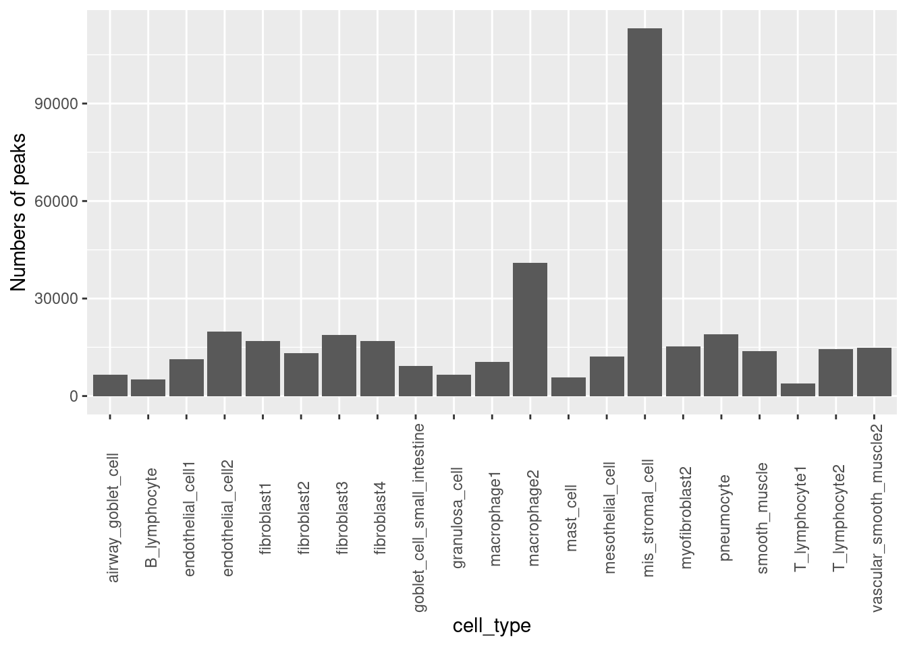

Last updated: 2021-10-04
Checks: 7 0
Knit directory: funcFinemapping/
This reproducible R Markdown analysis was created with workflowr (version 1.6.2). The Checks tab describes the reproducibility checks that were applied when the results were created. The Past versions tab lists the development history.
Great! Since the R Markdown file has been committed to the Git repository, you know the exact version of the code that produced these results.
Great job! The global environment was empty. Objects defined in the global environment can affect the analysis in your R Markdown file in unknown ways. For reproduciblity it's best to always run the code in an empty environment.
The command set.seed(20210404) was run prior to running the code in the R Markdown file. Setting a seed ensures that any results that rely on randomness, e.g. subsampling or permutations, are reproducible.
Great job! Recording the operating system, R version, and package versions is critical for reproducibility.
Nice! There were no cached chunks for this analysis, so you can be confident that you successfully produced the results during this run.
Great job! Using relative paths to the files within your workflowr project makes it easier to run your code on other machines.
Great! You are using Git for version control. Tracking code development and connecting the code version to the results is critical for reproducibility.
The results in this page were generated with repository version 3df804a. See the Past versions tab to see a history of the changes made to the R Markdown and HTML files.
Note that you need to be careful to ensure that all relevant files for the analysis have been committed to Git prior to generating the results (you can use wflow_publish or wflow_git_commit). workflowr only checks the R Markdown file, but you know if there are other scripts or data files that it depends on. Below is the status of the Git repository when the results were generated:
Ignored files:
Ignored: .ipynb_checkpoints/
Ignored: analysis/ldsc_results.nb.html
Ignored: analysis/results.nb.html
Ignored: analysis/snp_finemapping_results.nb.html
Ignored: analysis/splicing.nb.html
Untracked files:
Untracked: SNPs_categories,png
Untracked: SNPs_categories.png
Untracked: analysis/asthma_prelim_results.Rmd
Untracked: analysis/asthma_results_cp.Rmd
Untracked: analysis/enhancer_gene_feature.Rmd
Untracked: analysis/feedback.Rmd
Untracked: analysis/gene_finemapping_results.Rmd
Untracked: analysis/learn_susie.Rmd
Untracked: analysis/notes.Rmd
Untracked: analysis/snp_finemapping_results.Rmd
Untracked: analysis/splicing.Rmd
Untracked: code/.ipynb_checkpoints/
Untracked: code/ldsc_regression.sh
Untracked: code/make_plots.R
Untracked: code/run_ldsc.sh
Untracked: code/run_ldsc_with_bed.sh
Untracked: code/run_torus.sh
Untracked: code/split_vcf.sh
Untracked: data/num_overlaps_finemapped_SNPs_and_ctcf.txt
Untracked: data/scz_2018
Untracked: data/torus_enrichment_novel_annot.est
Untracked: data/torus_joint_enrichment.est
Untracked: data/torus_joint_refined_enrichment.est
Untracked: enhancer_gene_feature.rmd
Untracked: fig1_panels.pdf
Untracked: fig2.pdf
Untracked: fig_panel2.pdf
Untracked: gene_mapping.pdf
Untracked: output/background_SNPs_annotated_percent.txt
Untracked: panel_figure2.pdf
Untracked: test.txt
Unstaged changes:
Modified: analysis/index.Rmd
Note that any generated files, e.g. HTML, png, CSS, etc., are not included in this status report because it is ok for generated content to have uncommitted changes.
These are the previous versions of the repository in which changes were made to the R Markdown (analysis/asthma_results.Rmd) and HTML (docs/asthma_results.html) files. If you've configured a remote Git repository (see ?wflow_git_remote), click on the hyperlinks in the table below to view the files as they were in that past version.
| File | Version | Author | Date | Message |
|---|---|---|---|---|
| Rmd | 3df804a | Jing Gu | 2021-10-04 | wrote a more detailed documentation |
| html | a52be14 | Jing Gu | 2021-09-23 | Build site. |
| Rmd | e5d6f32 | Jing Gu | 2021-09-23 | added percent of SNPs with annotations |
| html | 53a8774 | Jing Gu | 2021-09-22 | Build site. |
| html | 2a6fc91 | Jing Gu | 2021-09-22 | Build site. |
| Rmd | bbb2944 | Jing Gu | 2021-09-22 | analyzed Asthma GWAS with functional priors from single cell data |
| html | 41f53c8 | Jing Gu | 2021-09-22 | Build site. |
| Rmd | 33d4e5a | Jing Gu | 2021-09-22 | analyzed Asthma GWAS with functional priors from single cell data |
| html | b0b938b | Jing Gu | 2021-09-22 | Build site. |
| Rmd | 8a5656c | Jing Gu | 2021-09-22 | analyzed Asthma GWAS with functional priors from single cell data |
Identify disease-relevant cell types and genes for Asthma
As neither the number of peaks identified for each cell type nor the list of cell-type specific peaks was available, I followed their way of identifying cell-type restricted peaks. First, I took a subset of accessibility scores for lung cells only. Then I modeled the null distribution of the log2-based cell-type dependent fold changes from the avg level using a normal distribution, with mean 0 and standard deviation estimated by that of top 50% least variable peaks. By sampling from the null distribution, we can compute p-values for each site and for each cell type. A 0.1% FDR cutoff was set to decide which peaks are considered to be cell-type specific.

Check overlaps in peaks across cell types
We want to know to what extent are the cell-type restricted peaks across cell types overlapped with each other. The table shows the majority of the identified cell types overlap with each other by less than 15%. As Msc has the highest amount of peaks, it's expected the most overlapped cell-type is Msc for almost all other cell types. We also see high percent of overlaps between subclusters of one cell type, such as fibroblast, endothelial cells. Lastly, B cells share 9% of peaks with T-lymphocyte subcluster 1.
| most_overlapped_per | most_overlapped_celltype | second_most_overlapped_per | second_most_overlapped_celltype | |
|---|---|---|---|---|
| Agb | 0.12 | Msc | 0.08 | Mac.2 |
| Bly | 0.10 | Msc | 0.07 | Mac.1 |
| End.1 | 0.16 | End.2 | 0.14 | Msc |
| End.2 | 0.15 | Msc | 0.12 | Mac.2 |
| Fib.1 | 0.15 | Msc | 0.14 | Fib.2 |
| Fib.2 | 0.18 | Fib.1 | 0.15 | Fib.4 |
| Fib.3 | 0.16 | Msc | 0.12 | Fib.1 |
| Fib.4 | 0.13 | Msc | 0.13 | Fib.1 |
| Gbl.2 | 0.12 | Msc | 0.07 | Mac.2 |
| Grn | 0.09 | Fib.2 | 0.09 | Fib.1 |
| Mac.1 | 0.12 | Msc | 0.07 | Fib.4 |
| Mac.2 | 0.16 | Msc | 0.06 | End.2 |
| Mes | 0.15 | Msc | 0.09 | Mac.2 |
| Mfb.2 | 0.16 | Msc | 0.10 | Mac.2 |
| Msc | 0.06 | Mac.2 | 0.03 | Fib.3 |
| Mst | 0.10 | Msc | 0.09 | Mac.1 |
| Pal | 0.15 | Msc | 0.10 | Mac.2 |
| Smm.1 | 0.14 | Msc | 0.12 | Fib.1 |
| Tly.1 | 0.09 | Msc | 0.09 | Bly |
| Tly.2 | 0.12 | Msc | 0.12 | Mac.2 |
| Vsm.2 | 0.15 | Msc | 0.13 | Fib.1 |
Log2 scaled enrichment estimates for each cell type, which was individually run using Torus. The highlighted bars show significant enrichment, while the bars in grey color do not. The x-axis tickmark labels consist of the annotation name and percent of all SNPs that have that annotation. Asthma-associated variants are significantly enriched in certain sub-clusters of macrophages and fibroblasts, but not in others. The cell types that show the highest enrichment in the chromatin accessibility peaks are immune-related cells.
sessionInfo()R version 4.0.4 (2021-02-15)
Platform: x86_64-pc-linux-gnu (64-bit)
Running under: Scientific Linux 7.4 (Nitrogen)
Matrix products: default
BLAS/LAPACK: /software/openblas-0.3.13-el7-x86_64/lib/libopenblas_haswellp-r0.3.13.so
locale:
[1] LC_CTYPE=en_US.UTF-8 LC_NUMERIC=C
[3] LC_TIME=en_US.UTF-8 LC_COLLATE=en_US.UTF-8
[5] LC_MONETARY=en_US.UTF-8 LC_MESSAGES=en_US.UTF-8
[7] LC_PAPER=en_US.UTF-8 LC_NAME=C
[9] LC_ADDRESS=C LC_TELEPHONE=C
[11] LC_MEASUREMENT=en_US.UTF-8 LC_IDENTIFICATION=C
attached base packages:
[1] stats graphics grDevices utils datasets methods base
other attached packages:
[1] knitr_1.31 ggplot2_3.3.3 workflowr_1.6.2
loaded via a namespace (and not attached):
[1] Rcpp_1.0.7 highr_0.8 pillar_1.5.0 compiler_4.0.4
[5] bslib_0.2.4 later_1.1.0.1 jquerylib_0.1.3 git2r_0.28.0
[9] tools_4.0.4 digest_0.6.27 jsonlite_1.7.2 evaluate_0.14
[13] lifecycle_1.0.0 tibble_3.0.6 gtable_0.3.0 pkgconfig_2.0.3
[17] rlang_0.4.11 DBI_1.1.1 yaml_2.2.1 xfun_0.21
[21] withr_2.4.2 dplyr_1.0.4 stringr_1.4.0 generics_0.1.0
[25] fs_1.5.0 vctrs_0.3.8 sass_0.3.1 tidyselect_1.1.1
[29] rprojroot_2.0.2 grid_4.0.4 glue_1.4.2 R6_2.5.1
[33] fansi_0.5.0 rmarkdown_2.7 farver_2.1.0 purrr_0.3.4
[37] magrittr_2.0.1 whisker_0.4 scales_1.1.1 promises_1.2.0.1
[41] ellipsis_0.3.2 htmltools_0.5.1.1 assertthat_0.2.1 colorspace_2.0-2
[45] httpuv_1.5.5 labeling_0.4.2 utf8_1.2.2 stringi_1.5.3
[49] munsell_0.5.0 crayon_1.4.1